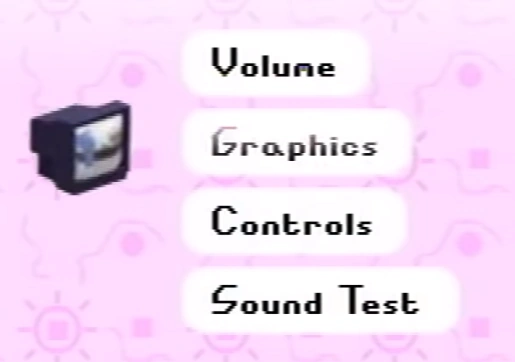
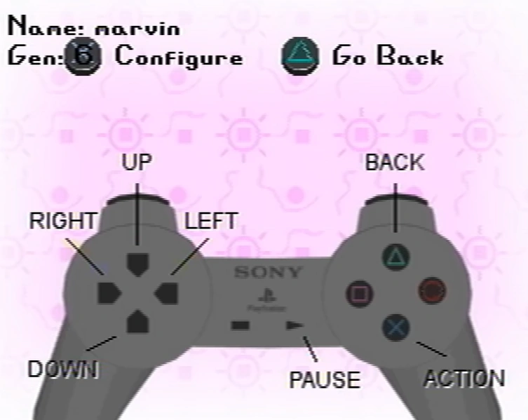

The options menu
The options menu is one of the parts of the pause menu. It is first shown in Petscop 17.
Presumably, the Volume section allows the game volume to be changed. This option was not explored at any point in the series.
Presumably, the Graphics section allows for graphical settings to be changed. This option was not explored at any point in the series.
The icon for the Graphics section is a television showing the Gift Plane.

The Control settings
The Controls section displays what each button does. It is briefly opened during Petscop 20.
While the text in the menu suggests that controls may be configured here, an error sound plays multiple times while Marvin is viewing the menu. This may indicate that it is not actually possible to configure the controls.
Interestingly, left and right is reversed to what is typical on the controllers. The background is also upside down in comparison to other menus.
The Sound Test section allows the player to listen to music and sounds they have heard while playing Petscop.
This section does not appear when Marvin visits the options menu in Petscop 20.
{kind=link}
{kind=link}
{kind=link}
{kind=link}